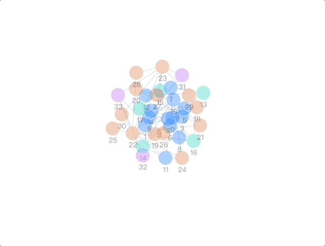
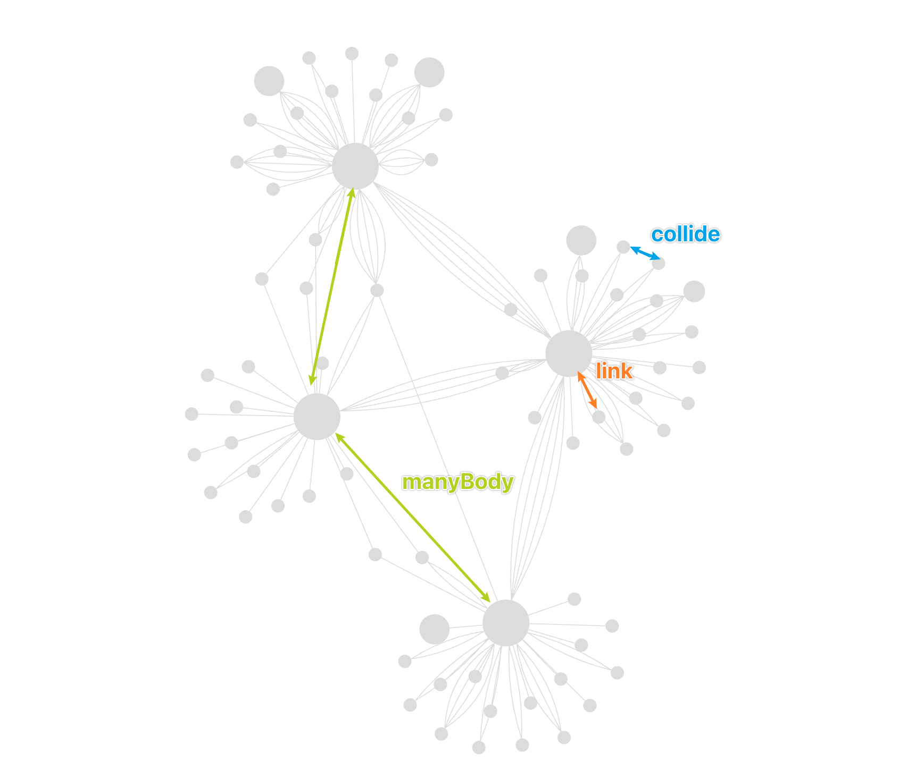
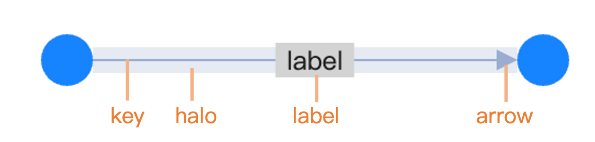

AntV G6 Research
本体可视化迁移到 G6 生态的技术调研
目标是减少自研布局、边连接、交互和插件代码，把前端复杂度收敛到本体解析、数据适配和产品配置层。
核心结论
G6 已覆盖我们当前自己写得最多、也最容易出错的部分：图元素绘制、节点/边状态、缩放拖拽、选择高亮、详情提示、缩略图、层级/力导向/社区类布局、边拥挤处理、历史操作、图例过滤和渲染器切换。
后续应该把“可视化引擎”交给 G6，把我们的代码收敛成三层：OWL/RDF 解析、本体图数据中间表示、G6 配置/交互适配。不要再维护自研力导向、React Flow handle、边路径计算、minimap、tooltip 和框选高亮。
图谱画布与交互
Canvas 默认渲染，支持 SVG/WebGL；内置拖拽、缩放、选择、hover 激活、聚焦、框选、力导向拖拽等行为。
布局与插件
内置 Force、D3 Force、ForceAtlas2、AntV Dagre、Concentric、Radial、ComboCombined 等布局；同时支持 Minimap、Tooltip、Legend、History、Hull、EdgeBundling 等插件。
本体语义适配
G6 接收 JSON 图数据，不解析 OWL、TTL、RDF/XML，也不理解 Class、ObjectProperty、DatatypeProperty 的语义。这里仍需要我们的 ontology-core。
需求能力覆盖
| 我们需要的能力 | G6 支持情况 | 建议实现方式 |
|---|---|---|
| OWL/TTL/RDF/XML 文件导入 | 不属于 G6 | 使用 RDF/OWL parser 解析为内部模型，再映射到 G6 的 { nodes, edges, combos }。 |
| 本体对象、属性、关系的图数据表达 | 图层支持，语义自定义 | 节点/边使用 G6 标准数据结构；本体字段放进 data，样式通过 callback 映射。 |
| 节点颜色按类型、命名空间、字段着色 | 支持 | 使用 node.style.fill callback 或 node.palette，不再硬编码 NPD/3GPP。 |
| 标签、箭头、虚线、边宽、关系类型 | 支持 | 边默认 type: 'line'，用 labelText、endArrow、lineDash 动态映射。 |
| 中心连接点、避免 handle 偏移 | 支持 | 使用圆形或统一中心坐标节点，避免自研 handle；如需端口再使用 G6 ports/sourcePort/targetPort。 |
| 力导向布局与防碰撞 | 支持 | 优先 ForceAtlas2 或 D3 Force；配置 preventOverlap/nodeSize 或 collide.radius。 |
| 层级布局 | 支持 | 使用 antv-dagre，可配置 rankdir、nodesep、ranksep、nodeSize。 |
| 社区/分组布局 | 支持 | 数据层生成 group/combo 字段；使用 ComboCombined、Concentric、Hull、BubbleSets 展示域/模块。 |
| 选中后一跳高亮 | 支持 | 使用 click-select、元素状态和事件 API；一跳关系计算可放在 adapter 层。 |
| 悬浮详情、点击详情侧栏 | 支持 | 轻量信息用 Tooltip 插件；复杂详情面板用事件监听驱动 React 状态。 |
| 缩略图、工具栏、右键菜单 | 支持 | 使用 Minimap、Toolbar、Contextmenu 插件，避免自研 DOM 叠层。 |
| 边重叠、平行边、密集关系 | 支持 | 使用 ProcessParallelEdges transform；必要时使用 EdgeBundling 或 EdgeFilterLens。 |
| 布局保存与恢复 | 需业务层保存 | G6 可以读写节点位置；本体路径/文件 hash 到 layout snapshot 的持久化仍由应用负责。 |
建议架构
迁移到 G6 不等于把所有逻辑塞进页面组件。我们应该把“本体语义”和“图谱渲染”分开，只在边界处做一次标准映射。
OntologyNode、OntologyEdge、OntologyGroup、displayFields、sourceRefs。
GraphData 和 GraphOptions，负责样式映射、布局配置、插件配置、状态映射。
布局策略
默认探索布局：ForceAtlas2
适合本体这类关系网络。它比普通力导向更偏向社区结构，G6 文档中也提供了 preventOverlap、kr、kg、linlog、barnesHut 等参数。
对 NPD 这类节点数几百、关系几百的图，优先测试 ForceAtlas2 + Canvas + 标签自适应；大图再考虑 Web Worker/WASM。
结构浏览布局：AntV Dagre
适合看 subclass、domain/range、依赖方向。它支持横向/纵向方向、层间距、节点间距和节点尺寸。之前层级布局纵向过长的问题，应优先改 rankdir: 'LR'、调大 ranksep，并按关系类型过滤。
域/社区布局：ComboCombined + Hull
如果本体能提供 namespace、domain、module、source 或 group 字段，可映射为 combo 或 hull。这样不用自己写“内圈/外圈”坐标算法，也能表达分区。
环形/径向布局：Concentric / Radial
Concentric 可根据 degree、centrality 或自定义权重分层；Radial 更适合树状或根节点明确的关系。NPD 的“本体对象内层、来源表外层”可抽象为分层权重，而不是专用布局。



示例代码
以下代码是面向我们项目的模板，不是直接复制官方示例。字段命名以通用本体中间表示为前提，避免出现 NPD/3GPP 特定逻辑。
1. 最小 G6 画布：数据、样式、交互、插件
import { Graph, NodeEvent, EdgeEvent, CanvasEvent } from '@antv/g6';
const graph = new Graph({
container: 'graph-root',
autoFit: 'view',
autoResize: true,
data: {
nodes: ontology.nodes.map((node) => ({
id: node.id,
type: 'circle',
data: node,
style: {
size: 36,
fill: colorBy(node.kind),
labelText: node.label,
labelPlacement: 'bottom',
},
})),
edges: ontology.edges.map((edge) => ({
id: edge.id,
source: edge.source,
target: edge.target,
type: 'line',
data: edge,
style: {
stroke: colorBy(edge.kind),
labelText: edge.displayLabel,
endArrow: edge.directed,
},
})),
},
behaviors: [
'drag-canvas',
'zoom-canvas',
'click-select',
'hover-activate',
'focus-element',
'auto-adapt-label',
'optimize-viewport-transform',
],
plugins: [
{ type: 'minimap', size: [220, 150], position: 'right-bottom' },
{ type: 'tooltip', trigger: 'hover', getContent: renderTooltip },
{ type: 'legend', nodeField: 'kind', edgeField: 'kind' },
],
});
graph.on(NodeEvent.CLICK, (event) => {
openDetailPanel(graph.getNodeData(event.target.id));
});
graph.on(EdgeEvent.CLICK, (event) => {
openDetailPanel(graph.getEdgeData(event.target.id));
});
graph.on(CanvasEvent.CLICK, () => {
closeDetailPanel();
});
await graph.render();2. ForceAtlas2：默认探索布局
graph.setLayout({
type: 'force-atlas2',
preventOverlap: true,
nodeSize: 36,
nodeSpacing: 8,
kr: 22,
kg: 1.2,
linLog: true,
barnesHut: true,
prune: true,
enableWorker: true,
});
await graph.layout();
await graph.fitView();3. D3 Force：需要精细 force 约束时使用
graph.setLayout({
type: 'd3-force',
link: {
distance: (edge) => edge.data?.kind === 'subClassOf' ? 100 : 160,
strength: 0.45,
},
manyBody: {
strength: (node) => -90 - degreeOf(node.id) * 8,
},
collide: {
radius: (node) => (node.data?.visualSize ?? 36) / 2 + 6,
strength: 1,
iterations: 2,
},
center: { x: 0, y: 0, strength: 0.08 },
});4. AntV Dagre：层级布局
graph.setLayout({
type: 'antv-dagre',
rankdir: 'LR',
align: 'UL',
nodesep: 44,
ranksep: 120,
nodeSize: [36, 36],
ranker: 'network-simplex',
controlPoints: false,
});
await graph.layout();5. Tooltip 与详情面板：轻重分离
const tooltip = {
type: 'tooltip',
trigger: 'hover',
enable: (event) => event.targetType === 'node' || event.targetType === 'edge',
getContent: (_event, items) => {
const item = items[0];
const data = item.data;
return `
<div class="ontology-tooltip">
<strong>${escapeHtml(data.label)}</strong>
<span>${escapeHtml(data.kind)}</span>
</div>
`;
},
};
graph.setPlugins((plugins) => [...plugins, tooltip]);
graph.on(NodeEvent.CLICK, (event) => {
const node = graph.getNodeData(event.target.id);
detailStore.show({ type: 'node', data: node.data });
});6. 平行边与节点尺寸映射
const graph = new Graph({
container: 'graph-root',
data,
transforms: [
{
type: 'map-node-size',
centrality: { type: 'degree', direction: 'both' },
minSize: 24,
maxSize: 54,
scale: 'sqrt',
mapLabelSize: false,
},
{
type: 'process-parallel-edges',
mode: 'bundle',
distance: 14,
},
],
});7. 渲染器选择：默认 Canvas，大图可试 WebGL
import { Graph } from '@antv/g6';
import { Renderer as WebGLRenderer } from '@antv/g-webgl';
const graph = new Graph({
container: 'graph-root',
renderer: () => new WebGLRenderer(),
data,
layout: { type: 'force-atlas2', enableWorker: true },
});暂未涉及但有价值的 G6 特性
Combo / CollapseExpand
把 namespace、domain、module、source system 映射为 combo，可折叠大类，解决本体节点过多时的第一屏压力。
Hull / BubbleSets
用区域轮廓表达“域”“社区”“来源系统”，比给每个节点加复杂卡片更轻，视觉也更利于扫视。
EdgeBundling / EdgeFilterLens
关系密集时不要先改布局算法，先降低边视觉噪声。EdgeBundling 合并相近边束，EdgeFilterLens 可局部查看边。
Fisheye
本体图经常需要局部看清邻域。Fisheye 可以放大鼠标附近区域，不必频繁缩放整个画布。
History
后续如果支持手动拖拽整理布局，History 插件可以提供 undo/redo，布局编辑体验会更完整。
Web Worker / WASM Layout
G6 文档说明多数内置布局支持 Worker，部分布局有 WASM 版本。大图布局计算可以先从这里优化，而不是自写算法。
风险与边界
| 风险 | 说明 | 应对 |
|---|---|---|
| HTML 节点性能 | 卡片式 HTML 节点会显著增加 DOM 与重排成本，几百节点就可能拖慢交互。 | 默认用 Canvas 圆点/简洁节点；详情交给 Tooltip/侧栏；只有少量精选节点使用 HTML。 |
| 布局并非语义推理 | G6 只根据节点边和布局参数摆放，不知道 OWL 语义。 | 在 ontology-core 中提前计算关系类型、分组、过滤和展示字段。 |
| 完全自动布局仍可能拥挤 | 力导向只能优化局部能量，不保证边无交叉，也不保证所有标签可读。 | 默认隐藏长标签、启用 auto-adapt-label、按关系过滤、使用 fisheye/tooltip/详情面板。 |
| 版本 API 差异 | G6 5.0 以后行为系统、插件配置和旧版本有差异。 | 固定依赖版本，封装 adapter，不让应用页面直接散落 G6 API。 |
| 导入文件格式复杂 | OWL 可能是 RDF/XML、Turtle、JSON-LD，且命名空间和 annotation 质量不一。 | 解析层独立测试；显示层只接受标准中间表示，避免把解析异常扩散到 G6 组件。 |
参考来源
本报告只基于 AntV G6 官方文档、官方 GitHub 与官方示例页面整理。